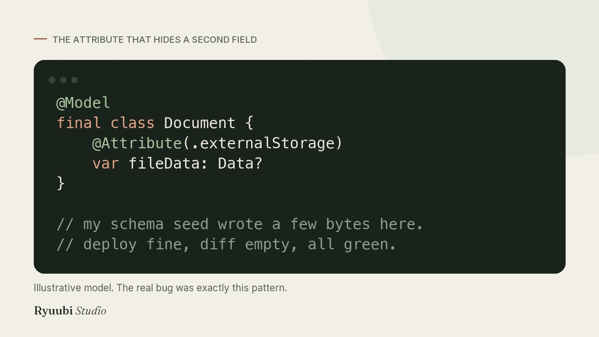
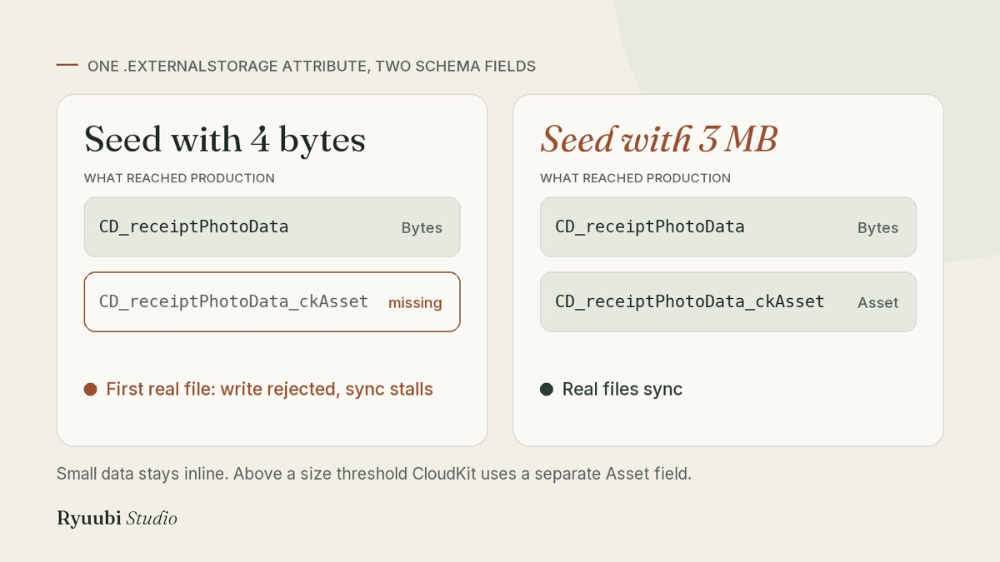

SwiftData + CloudKit
SwiftData, CloudKit and the missing _ckAsset field
In short
- Who it's for: you build an iOS app with SwiftData and sync it through iCloud with CloudKit, and at least one model stores files or images with
@Attribute(.externalStorage). - The problem: that attribute needs two fields in the CloudKit Production schema, and the second one only appears if you test with a large file. If it's missing, sync stops silently for anyone who saves a real file.
- What you'll take away: a two-minute check to see if your app is exposed today, a simple way to prevent it, and the checklist I now follow before every release.
Why this bug is nasty
Most bugs announce themselves: a crash report, an error in the console, a one-star review. This one doesn't. The app keeps working on the device. The user keeps adding data. It just never reaches their other devices, and nothing tells them.
That's what happened to Quillino, my app for people who rent out a property or two. It's built with SwiftUI, stores data with SwiftData and syncs it to the user's iCloud with CloudKit. For people who rely on the app to keep track of rent across an iPhone and an iPad, "sync silently stopped" is about the worst thing that can happen, because they only notice when data they expect isn't there.
First, how CloudKit handles your schema
If you've only ever turned on the iCloud capability and let SwiftData do the rest, this part is easy to miss.
CloudKit keeps a schema for your app: the list of record types and fields it accepts. SwiftData creates these from your @Model classes (a model called Expense becomes a record type called CD_Expense, a property amount becomes a field CD_amount).
There are two copies of that schema, in two environments:
- Development is used by builds you run from Xcode. It's permissive: when the app writes a field that doesn't exist yet, CloudKit simply adds it.
- Production is used by TestFlight and App Store builds. It's strict: it only accepts fields that are already in its schema. To add them, you open the CloudKit Console and deploy the Development schema to Production. Deployed fields can't be removed later.
So if you add a property, test it from Xcode and ship, everything looks fine on your device, while Production still doesn't know the new field. When a user's app tries to save it, CloudKit rejects the record. SwiftData retries, gets rejected again, and that record blocks the queue: the changes behind it don't sync either.
This happened to me twice, with two different fields. The fix for the first case is a habit: deploy the schema to Production before every TestFlight that changes a model. But that habit alone wasn't enough.
The catch: you can only deploy what Development has seen
The Development schema only contains fields the app has actually written at least once. An optional property that's always nil while you test never gets written, so it never appears in Development, so it's never deployed. Then a real user fills it in.
My answer was a schema seeder: a small piece of debug-only code that, when I launch the app with a specific flag, creates one object of every model with every property filled in, and saves it. Sync pushes those objects to Development, so every field shows up there. Then I deploy.
To make sure I don't forget to update it, a unit test counts the properties of each model and fails if one isn't covered by the seeder. The first time I ran it, it found two fields I had missed by hand.
The field I still didn't have
Some of Quillino's models store files: photos of expense receipts, documents attached to a tenant. In SwiftData you mark those properties so the data is kept outside the main database:

My seeder put a few bytes in those properties. It only had to be "not nil", after all. The deploy went through and the diff was empty.
Then a real receipt photo was saved, and sync stalled again. Same symptom as before, different cause.
CloudKit stores this kind of data in two different ways depending on its size. Small values stay inline, in a normal Bytes field called, for example, CD_receiptPhotoData. Larger values are uploaded as a separate file, and CloudKit uses a second field of type Asset for that, with _ckAsset added to the name: CD_receiptPhotoData_ckAsset.
A 4-byte test value is always small, so CloudKit only ever created the first field. The second one never existed in Development, so it was never deployed, so the first real photo was rejected by Production.

.externalStorage attribute, two fields in the CloudKit schema.Are you affected? A two-minute check
- In Xcode, search your project for
.externalStorageand note each property that uses it. - Open the CloudKit Console, pick your container, and switch to the Production environment.
- Under the schema's record types, open the type for each of those models (
CD_plus the model name). - For each property, look for both fields:
CD_propertyNameandCD_propertyName_ckAsset.
If the _ckAsset one is missing, you're exposed: the first user who saves a large enough file will stall their own sync. The fix is below.
How to fix it and keep it fixed
First, get the field into Production. You can add it by hand in the Console for an urgent case, as I did for receipts, but the reliable way is to let the seeder create it.
The change is small: for every .externalStorage property, the seeder writes a large value. I use 3 MB, well above the point where CloudKit switches to an Asset. A simplified version of the idea:
#if DEBUG
// Launched with the -cloudKitSchemaSeed argument, against Development.
@MainActor
func seedCloudKitSchema(in context: ModelContext) {
let receipt = Expense()
receipt.amount = 12.5 // every property gets a non-default value
receipt.note = "Schema seed"
receipt.receiptPhotoData = largeBlob() // big enough to create the _ckAsset field
context.insert(receipt)
try? context.save()
}
private func largeBlob(megabytes: Int = 3) -> Data {
Data((0..<megabytes * 1_000_000).map { _ in UInt8.random(in: 0...255) })
}
#endifRun it from Xcode on a real device, wait for sync to finish, and check in the Console (Development) that the _ckAsset fields now exist. Then deploy to Production.
When I did this, the deploy diff showed that a second field was missing too: CD_fileData_ckAsset, used for tenant documents. I found it in the Console instead of hearing about it from a user.
Last, protect the fix from your future self. I added a test that fails if the seed values for these properties ever become small again:
testExternalStorageSeedBlobsAreLargeEnoughForAssetRepresentationThe name is long on purpose. When it fails, it explains itself.
One warning before you run a seeder
Don't run it on the iPhone that holds your real data with your personal iCloud account. Switching between Development and Production data on the same device made CloudKit deliver records again, and since SwiftData with CloudKit doesn't support @Attribute(.unique), I ended up with duplicate properties in my own app. After seeding, delete the seed records in the Console and reinstall the app before archiving a build. A test device or a separate iCloud account avoids the problem entirely.
What changed for me
Before, I found out whether the schema was complete when sync broke. Now it's a routine that ends with a clear yes or no before the build ships.
- Missing fields show up at deploy time, not in production. The second deploy has to come back empty, and when it doesn't, I know exactly which field is missing.
- Forgetting is caught by tests. Adding a property without seeding it, or shrinking a blob, makes a test fail instead of reaching users.
- The size trap is gone for good. Every
.externalStorageproperty is exercised with a realistic file, which is how users actually use it.
The checklist
- Changed a
@Model? Bump your schema revision number. - Seed every property with a non-default value, and
.externalStorageproperties with a large blob. - Run the seed on a device, wait for sync, confirm the new fields in the Development schema.
- Deploy to Production. Deploy again: the diff must be empty.
- Only then send the build to TestFlight.
Apple can change size thresholds and field naming between versions of iOS and SwiftData, so check what you see in your own Console rather than trusting exact numbers.
Want the whole method?
This incident, the seeder approach, schema versioning and the rules behind Quillino's token-based design system are collected in the Design system and architecture pack. You load it into Claude, Cursor, Copilot or whichever AI assistant you use, and it walks you through the same checks before your next release.
See the pack